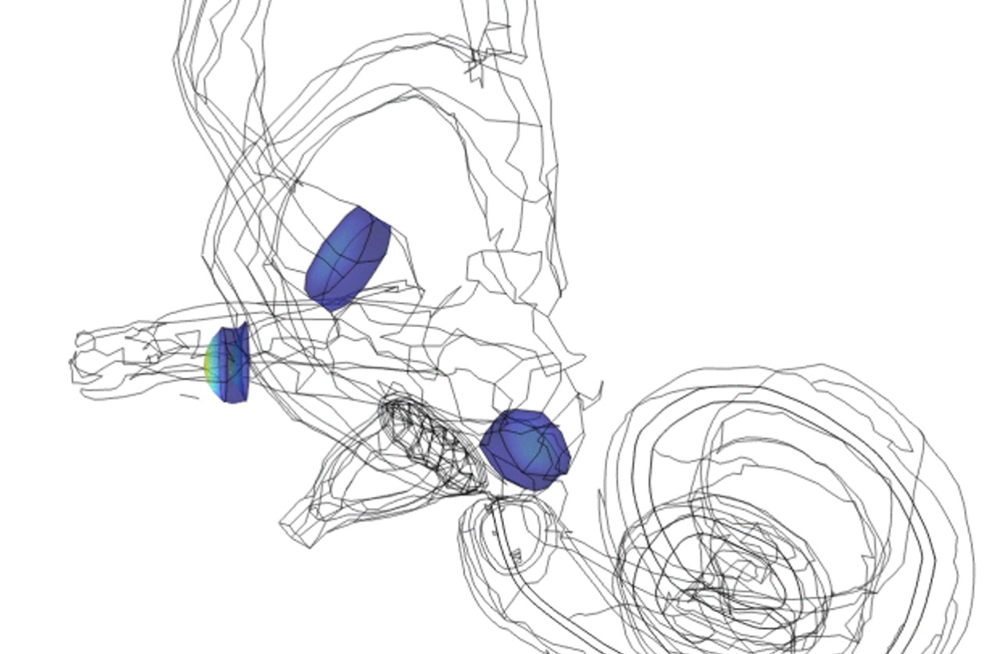
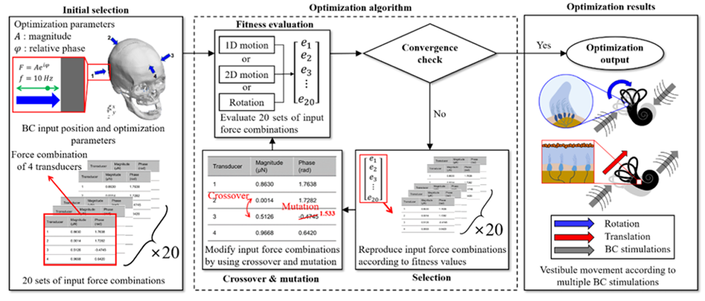

연구 · Motion Sickness
멀미는 눈으로 보는 움직임과 귓속 전정기관이 느끼는 움직임이 어긋날 때 생깁니다. 우리는 전정기관(반고리관·쿠풀라)을 유한요소로 모델링해 다양한 움직임에서 어떻게 자극이 발생하는지 분석하고, 이를 줄이는 능동형 저감 방법을 연구합니다. 자율주행·전기차 실내의 편안함으로 이어지는 연구예요.
관련 연구: 골전도 →머리가 회전할 때 반고리관 속 쿠풀라(cupula)가 어떻게 변형되는지 유한요소로 해석합니다.


전정기관 모델로 멀미를 유발하는 자극 입력을 정량화하고, 이를 줄이는 알고리즘을 설계합니다.
